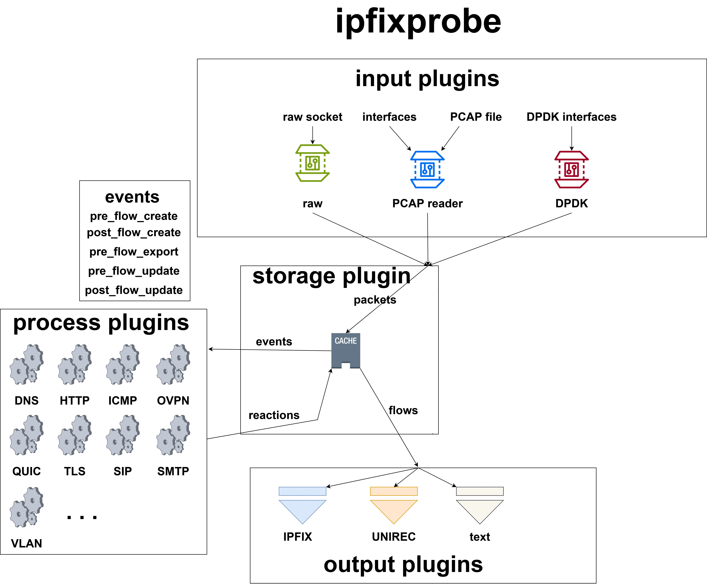

<section style="padding:0px; padding-bottom:100px">
  <div class="container"> 
    <div class="blog-post text-container">
	  <p>The architecture of the ipfixprobe can be described by the following diagram:</p>
	  
	  <h1>Process plugin</h1>
	  <p>The ipfixprobe contains script that creates template for new process plugin. To use it follow these steps:<br>
      <div class="text editable"  style="display: flex;flex-direction: column;justify-content: center;align-items: left;">
		<p>Run the script:</p>
		<span>
			<p style = "font-family: monospace;">cd process</p>
			<p style = "font-family: monospace;">./create_plugin.sh</p>
		</span>
		<span>
			<p>To create the process plugin follow these steps:</p>
			<ol>
				<li><p>Add <b>plugin_name.hpp</b> and <b>plugin_name.cpp</b> files to ipfixprobe_process_src variable in <b>Makefile.am</b>.</p></li>
				<li><p>Implement process plugin event functions. Don't forget to remove unused events to keep default implementation.</p></li>
				<li><p>Set <b>PLUGIN_NAME_UNIREC_TEMPLATE</b> and <b>IPFIX_PLUGIN_NAME_TEMPLATE</b> macros to export Unirec or IPFIX data respectively.</p></li>
				<li><p>Define Unirec and IPFIX fields to export Unirec or IPFIX respectively.</p></li>
				<li><p>Implement <b>fill_ipfix</b> and <b>fill_unirec</b>.</p></li>
				<li><p>Update README.md.</p></li>
			</ol>
		</span>
		<h2>Process plugin events</h2>
		<p><b>pre_create</b> Is called before the creation of new flow from the initial packet.</p>
		<p><b>post_create</b> is called after the flow is created, taket newly created flow and initial packet.</p>
		<p><b>pre_update</b> is called when incoming packet belongs to the existing flow, before the data from the packet are added to the flow.</p>
		<p><b>post_update</b> is called after the data of the packet are added to the flow.</p>
		<p><b>pre_export</b> is called right before the flow is exported.</p>
	  </div>
	  <h1>Input plugin</h1>
	  <p>You can also create own input plugin.</p>
	  <span>
			<p>To create the input plugin follow these steps:</p>
			<ol>
				<li>Create <b>plugin_name.hpp</b> and <b>plugin_name.cpp</b> in the <b>input</b> directory.</li>
				<li>Add <b>plugin_name.hpp</b> and <b>plugin_name.cpp</b> files to ipfixprobe_input_src variable in <b>Makefile.am</b>.</li>
				<li>Create a plugin class that inherites from the Input plugin class.</li>
				<li>Override virtual Plugin class methods (<i>init</i>, <i>close</i>, <i>get_parser</i>, <i>get_name</i>) and Input plugin method to receive new packets(<i>get</i>).</li>
			</ol>
		</span>
  </div>
  </div>
</section>